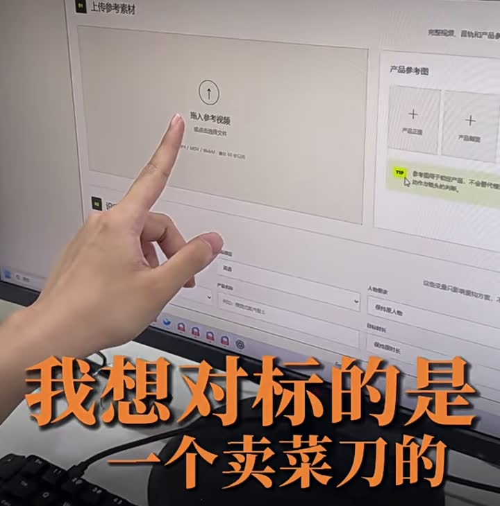
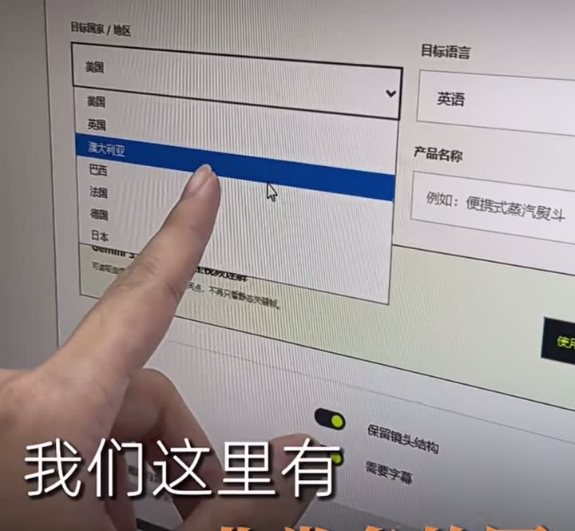
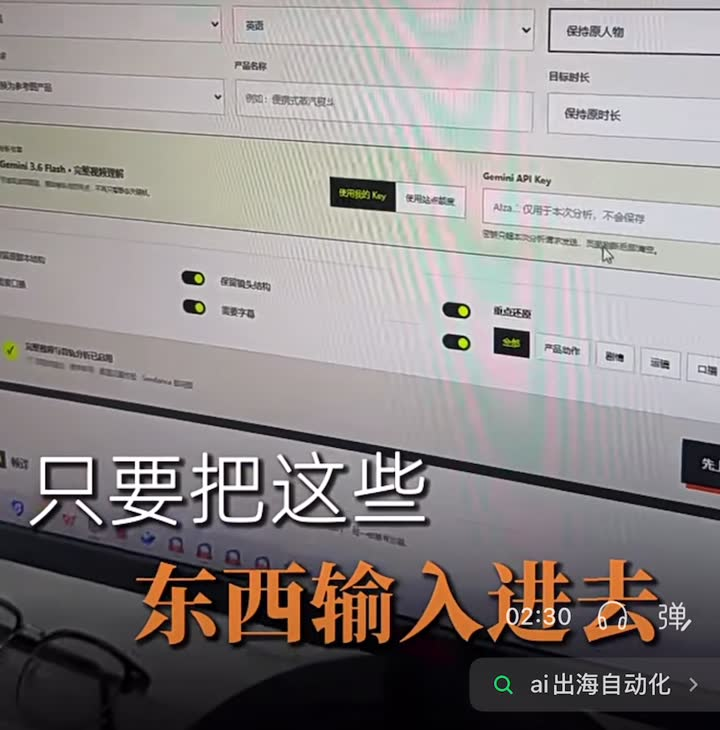
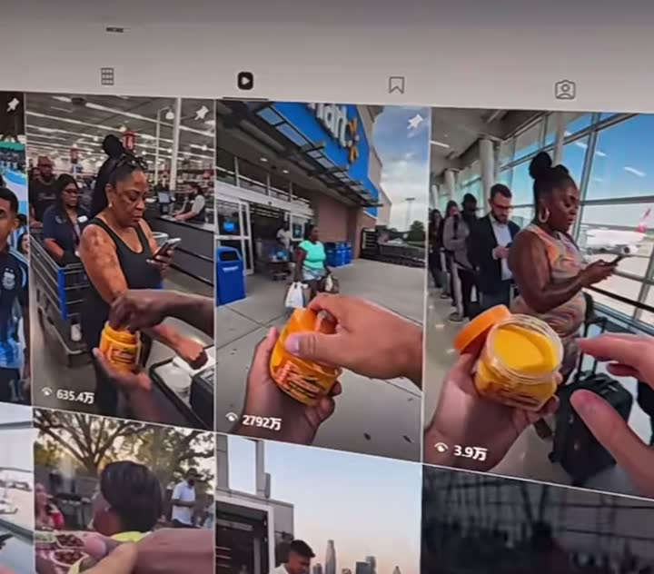

01
上传参考视频
导入一条已有的带货或种草视频，作为镜头结构、动作和表达方式的参考。
输入素材根据视频中实际展示的界面，整理出这套工具可能承担的工作：把一条参考带货视频，转换成适配不同国家、语言和产品的多版本营销素材。

导入一条已有的带货或种草视频，作为镜头结构、动作和表达方式的参考。
输入素材加入产品包装、商品主图等图片，让生成内容能够围绕指定商品展开。
输入素材
选择美国、英国、澳大利亚、巴西、法国、德国、日本等目标市场。
本地化配置指定输出语言，例如英语，使口播、字幕和文案适配目标市场。
本地化配置
填写商品名称，帮助系统把参考视频中的表达转化为当前产品的带货内容。
内容配置可以设置是否保持原人物，以及是否保持原视频时长。
生成控制保留参考视频的镜头顺序、节奏和叙事骨架，同时替换语言或产品表达。
生成控制为生成的视频添加字幕，适合短视频平台的静音观看场景。
后期处理
从同一个产品和参考视频产出不同场景、人物或表达方式的带货视频，用于创意测试。
输出结果| 功能 | 解决的问题 | 适合的使用场景 |
|---|---|---|
| 视频理解 | 不用从零设计脚本和镜头 | 复用已经验证过的爆款内容结构 |
| 国家与语言选择 | 减少人工翻译和本地化工作 | 同一商品测试多个海外市场 |
| 镜头结构保留 | 保持原视频的节奏和叙事逻辑 | 快速改编已有 UGC / 口播素材 |
| 字幕与配音 | 降低重新拍摄的成本 | 制作多语言广告和商品介绍 |
| 多版本生成 | 提高素材试错和迭代速度 | 比较不同开头、卖点和 CTA 的转化表现 |